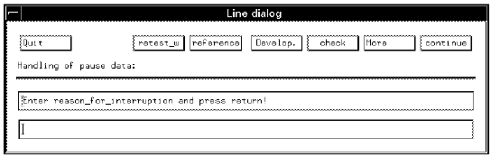

BUTTON
Can be used to create a button in a designated screen of the production environment. It is typically used in conjunction with some type of call so that the user can perform a particular task by clicking a button.
The lines below show that a check button appears in the Line Dialog screen. If pressed, the "check_dock" routine is called.
LINE_DIALOG
reason_for_interruption=DIALOG_INPUT;
BUTTONcheck=PROB_HND_CALL(check_dock);

Note LINE_DIALOGs and SCREEN_DIALOGs have a predefined set of buttons, like
skip,continue, retest etc., so typically you would use the more
button in order to access these. See LINE_DIALOG and SCREEN_DIALOG for more
information.